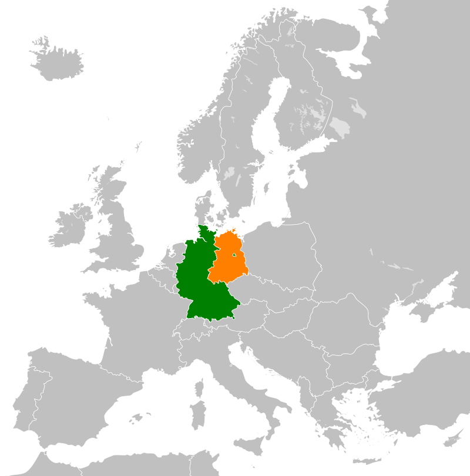

The East German government dominated by the Socialist Unity Party of Germany (SED) (a communist party) started to falter on 2 May 1989, when the removal of Hungary's border fence with Austria opened a hole in the Iron Curtain. The border was still closely guarded, but the Pan-European Picnic and the indecisive reaction of the rulers of the Eastern Bloc set in motion an irreversible movement.[2][3] It allowed an exodus of thousands of East Germans fleeing to West Germany via Hungary. The Peaceful Revolution, a part of the international Revolutions of 1989 including a series of protests by the East German citizens, led to the fall of Berlin Wall on 9 November 1989 and GDR's first free elections later on 18 March 1990 and then to the negotiations between the two countries that culminated in a Unification Treaty.[1] Other negotiations between the two Germanies and the four occupying powers in Germany produced the so-called "Two Plus Four Treaty" (Treaty on the Final Settlement with Respect to Germany), granting on 15 March 1991 full sovereignty to a reunified German state, whose two parts were previously bound by a number of limitations stemming from their post-World War II status as occupation zones, though only on 31 August 1994 did the last Russian occupation troops (Russia is the successor of the Soviet Union legally) leave Germany.
